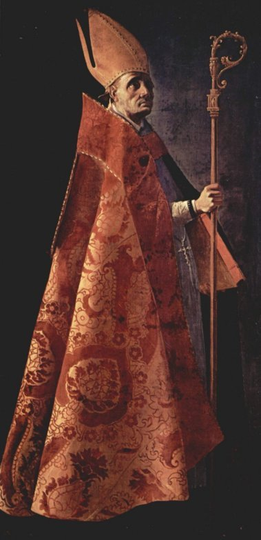

"SANTO AMBRÓSIO"



"ESCOLHEU A CARREIRA DE MAGISTRADO, SEGUINDO PASSOS DO PAI. MAS O GRANDE ADVOGADO, PELA VONTADE DIVINA, TRANSFORMOU-SE NUM ADMIRÁVEL E SANTO BISPO."

=ÍNDICE=
 -
SUA OBRA - E MORTE DE AMBRÓSIO
-
SUA OBRA - E MORTE DE AMBRÓSIO
-
FOTOGRAFIAS + CONVITE + E-MAIL